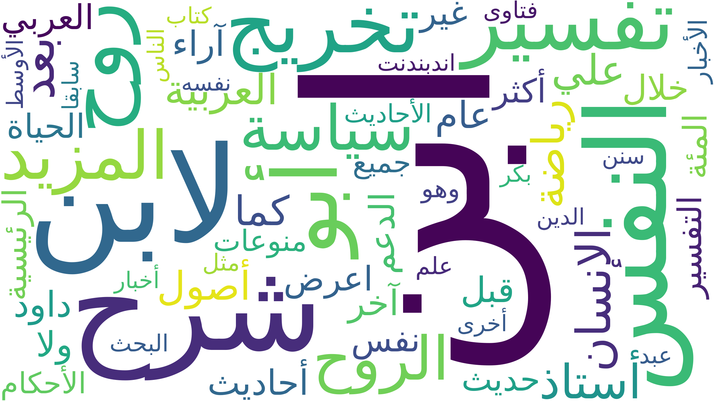

Le mot « âme » en arabe
Dans la langue arabe, le concept d’âme ne se limite pas à un seul terme. Il est principalement exprimé par روح (rūḥ) etنفس (nafs). Ces deux notions renvoient à des dimensions spirituelles, religieuses et psychologiques distinctes, très présente dans les textes littéraires et religieux.
Tableau d’analyse lexicale
Le tableau ci-dessous présente les résultats de l’extraction automatique réalisée à partir du corpus arabe (les graphies, les URLs, le code HTTP, l'encodage, les occurrences,ect.).
Sur les 61 URLs collectées (30 pour روح et 31 pour نفس), 48 ont pu être analysées avec succès (78%). Les 13 URLs restantes n'ont pas pu être traitées en raison de limitations techniques (blocage du scraping, contenu JavaScript, pages inaccessibles). Ceci est normal et démontre le bon fonctionnement du script (gestion des erreurs). Ce taux de réussite de 78% est considéré comme satisfaisant dans le domaine du web scraping automatique.
Nuage de mots
Le nuage de mots permet de visualiser les termes les plus fréquemment associés aux notions de روح et نفس dans le corpus.

À partir du nuage de mots, je constate que certains mots apparaissent fréquemment à proximité du mot âme, ce qui indique leur pertinence sémantique. Ces mots relèvent de plusieurs champs : - Religieux et philosophique : الدين، الأحاديث - Humain et existentiel : الإنسان، الحياة - Textuel et interprétatif : تفسير، حديث، كتاب - Intellectuel et scientifique : علم، البحث - Éthique : أخلاق Ce nuage de mots met en évidence que le concept d’âme est principalement associé aux dimensions religieuse, humaine, textuelle et intellectuelle dans les textes analysés.
Analyse linguistique
À partir des 61 URLs en arabe portant sur les deux graphies du mot 'âme': روح (rūḥ) et نفس (nafs),pour mener bien mon étude j'ai tokeniser mon corpus avec CAMeL Tools et le netoyer par la suite, j'ai généré un nuage de mots qui révèle les principaux concepts associés au mot 'âme' en arabe : aspects religieux (الدين, الأحاديث), philosophiques (تفسير), et humains (الإنسان, الحياة). L'étude des données souligne une différence claire entre روح, fréquemment associée à un aspect spirituel et transcendant, et نفس, plus étroitement liée à l'individu, à la psychologie et aux sentiments. Cette dualité souligne la profondeur conceptuelle du terme « âme » en arabe.